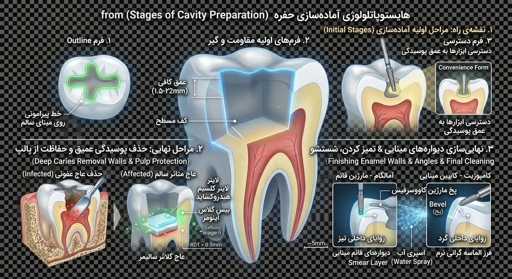
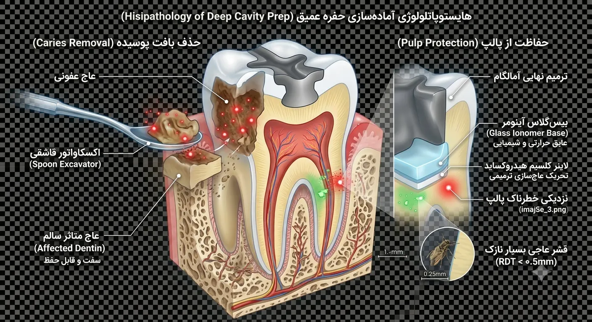
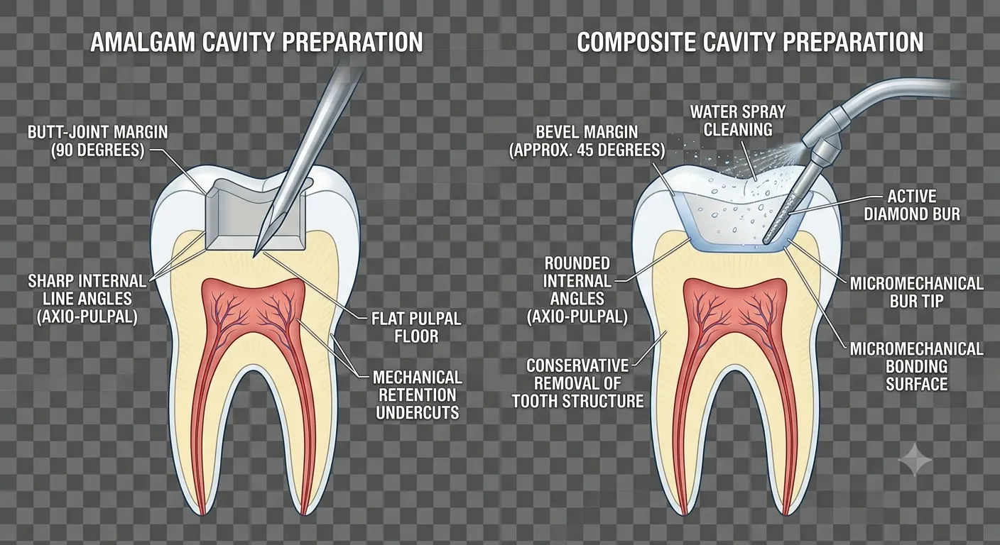

نسخه استخراجشده؛ ترجمه یا تأیید علمی انجام نشده است. وضعیت: captured
مراحل اولیهی آمادهسازی حفره، پایهیِ بیومکانیکِ ترمیم را بنا میکنند و شامل گامهای زیر هستند :
فرم Outline (خط پیرامونی): تعیینِ محدودهیِ نهاییِ لبههایِ حفره روی سطح دندان. این خط باید تمام پوسیدگیهایِ سطحی و شیارهایِ مستعد را در بر بگیرد و روی مینایِ سالم قرار گیرد (خط سبز در تصویر).
فرمهای اولیه مقاومت و گیر (Primary Resistance & Retention):
مقاومت: تامینِ عمقِ کافی (حداقل ۱.۵ میلیمتر برای آمالگام) و کفِ مسطح برای جلوگیری از شکستن دندان یا ترمیم.
گیر: ایجادِ دیوارههایِ همگرا (به سمت اکلوزال) برای قفل کردنِ فیزیکیِ آمالگام (خطوط آبی در تصویر).
فرم دسترسی (Convenience Form): تغییرِ شکلِ حفره بهگونهای که دیدِ کافی، دسترسیِ ابزارها به عمقِ پوسیدگی و امکانِ جایگذاریِ راحتِ ماده ترمیمی فراهم شود .

(توضیح تصویر: این دیاگرام شفاف، تمرکز را بر روی عمقِ حفره (Pulp Floor) قرار داده است. سمت چپ: عاجِ عفونیِ نرم (Infected Dentin) با رنگ قهوهای تیره و باکتریها (قرمز) دیده میشود. سمت راست: پس از حذفِ عاجِ عفونی، عاجِ متاثرِ سالم (Affected Dentin) باقی مانده است. در عمیقترین نقطه، لاینرِ کلسیم هیدروکساید (سفید) و بیسِ گلاس آینومر (آبی روشن) برای حفاظت از پالپ جایگذاری شدهاند. ضخامت RDT زیر ۰.۵ میلیمتر با هایلایت قرمز مشخص است.)
پس از ایجادِ فرمِ کلی، وارد فازِ حساسِ پاکسازیِ عمقی و حفاظت از پالپ میشویم (با رفرنس به تصویر بالا):
حذف بافت پوسیدهیِ باقیمانده (Deep Caries Removal): در این مرحله، با استفاده از اکسکاواتور قاشقی یا فرزِ گرد کارباید در سرعتِ پایین، عاجِ عفونی (Infected Dentin) که نرم و دمینرالیزه است، کاملاً برداشته میشود (سمت چپ تصویر). عاجِ متاثر (Affected Dentin) که سفتتر است و قابلیتِ ریمینرالیزاسیون دارد، در کفِ حفره حفظ میشود (سمت راست تصویر).
حفاظت از پالپ (Pulp Protection): اگر حفره عمیق باشد و ضخامت عاجِ باقیمانده (RDT) کم باشد (کمتر از ۰.۵ میلیمتر - هایلایت قرمز)، استفاده از لاینرهایِ کلسیم هیدروکساید برای تحریکِ عاجسازی و بیسهایِ عایق (مثل گلاس آینومر) الزامی است (سمت راست تصویر).

(توضیح تصویر: این دیاگرام، نهاییسازیِ مارژینها را مقایسه میکند. سمت چپ: مارژینِ قائمِ آمالگام (Butt-joint) با دیوارهیِ صاف و قائم مینایی و زوایایِ تیزِ داخلی (۱). سمت راست: مارژینِ پخشدهیِ کامپوزیت (Bevel) با دیوارهیِ مایل مینایی و زوایایِ گردِ داخلی (۲). در پایان، یک اسپریِ آب (آبی درخشان) کل حفره را تمیز میکند (تمیز کردن حفره).
آخرین گامها قبل از جایگذاری ترمیم، تضمینکنندهیِ سیلِ مارژینال و تمیزیِ بستر هستند (با رفرنس به تصویر بالا):
نهاییسازی دیوارههای مینایی و زوایا (Finishing Enamel Walls & Angles): دیوارههای حفره باید صاف و منشورهای مینایی دارای پشتیبانِ عاجی باشند (یادآوری از Lesson 1.3.1).
در آمالگام: دیوارههایِ قائم و زوایایِ داخلیِ تیز (Butt-joint) برای قفل مکانیکی.
در کامپوزیت: ایجاد Bevel (پخ) روی مارژینِ مینایی برای افزایشِ سطحِ باندینگ و زیبایی (سمت راست تصویر).
تمیز کردن، شستشو و خشک کردن حفره (Cleaning & Drying): برداشتنِ تمامیِ برادههایِ تراش (Smear Layer)، خون، بزاق و آلودگیها با اسپریِ آب و هوا، و سپس خشک کردنِ ملایمِ حفره (بدونِ Over-dry کردن عاج) قبل از جایگذاری ترمیم (درخشش آبی در تصویر).
